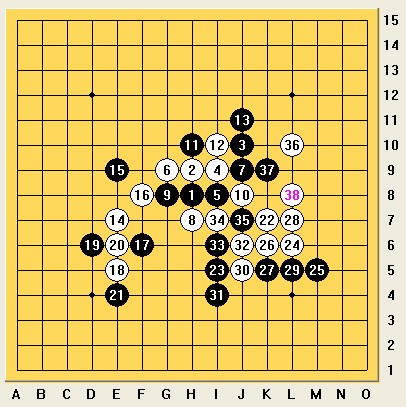
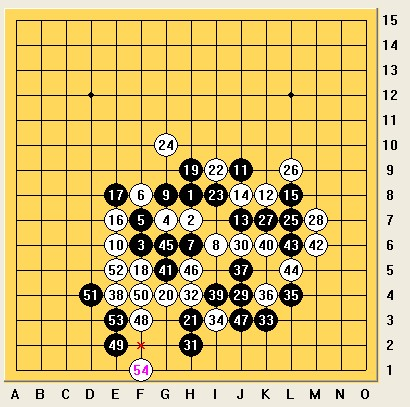

血战石家庄(中)
#1 血战石家庄(中)作者：掌棋如烟 发表时间：2010-10-11 9:27:08
小组赛第五轮,疏星 杨彦希(黑)0:1朱建锋(白)
大家都叫朱建锋二师兄是有原因的,
当时大鱼跟肖斌说自己是所有选手中唯一参加了全部9届全国赛的人,朱建锋接茬到:我八届,我八届…二师兄的名字就这么传开了.别只笑别人,我抽签抽到的B组2号种子也着实郁闷了一小下,都说2B不只是铅笔…果然最后成绩我还是2了…
言归正传,朱建锋小组赛的时候状态出奇的好,已经到了流氓会武术的境界,前四轮全胜,我压力这个大啊.问了好多人,最终决定用疏星2打的一个9手变化拼一下.小牛第5轮的对手正是高飞,也急着问我变化,当我说出我的想法的时候,小牛担心的说,他8手先变走H7这个怎么办,我记忆中这个8很弱啊,应该不会有人走吧,含糊的说了几句,谁成想我还真死到这个8手上了.
如图:

疏星开局对手没换,看到这个8手之后我差点没把下巴掉到棋盘上,咋怕啥来啥呢,9和11应该都正常,12手快速填中间我就有点奇怪了,感觉走的很腼腆啊,13手我本想到左边挡白棋眠三,可惜当时心理出了的问题,认为自己是研究型棋手,跟中国最好的计算性棋手在开局没有占到便宜的情况下拼中盘会很吃亏的,所以我决定跳出对手研究,走了个后发制人型的13(结果是这个“后”没发出来,就挂了).14手暴力强飘,15手挡住左边唯一的眠三安全.16手攻守兼备,17占住白棋后续出棋的空间要点18-21正常交换,左下的战事告一段落.
在我还在为17手走的巧妙沾沾自喜的时候,22手彻底打醒了我.看似是个标准的疏星白棋右下先手进攻的定型,仔细一算这个8-22的活二以及后续10-34的活二向下进攻的时候是能够从左边白棋的形状中借到力量的,而此时黑棋虽然拥有个小先手可以先在右上方动手,但无论怎么弄最后都是进攻不成反让左下和右下的白棋联系到一起.我仔细计算挣扎了好久走出了实战的23,这已经是我能想到既断绝白棋左右联系又能控制右边白棋成型的最强手段了.
可惜朱建锋的状态实在是太好了,不愧是国内第一算力棋手,大约10分钟后,带着一副我已经地毯了的表情,走出了24,26,28的定型,后边我不得不又挣扎了一下(不挣扎20多手就挂了多逊啊…)然后投了…
小组赛第六轮,疏星 贺启发(黑)0;1杨彦希(白)
如果说对朱建锋的失败还不能把我从轻松出线的幻想中拉回来的话,那对发哥的这盘可以说是真正警醒了我.贺启发一直是我最尊重的棋手,也是中盘力量最强大的几个中国棋手之一,与这样的棋手对阵,掉进他的研究,其结果可想而知.
如图:

发哥开疏星我没换,因为虽然上1盘刚输了1盘疏星,但我还是自信对手不会走出什么我没见过的新招,疏星用白棋还是会很舒服的.实战的5手发哥在浙江赛赢小天时用过一次,肯定有深入的研究,可我还是不担心,盲目的认为这个5后边黑棋的手段只要白棋都会应对,那就是自虐的选择,结果我再一次过高的估计了自己.
实战前14手都常见,15手我记忆中比较软弱的选择,黑棋在右边没有直接的VCT的情况下,等于将先手白送给白棋,白棋当然不能跟过去防守,没多想就在E7定型了,走完以后有点后悔没多想想是不是E9会更好一点,黑17长考后强防.18手我感觉差不多要杀了,这个形状跟张进宇破解疏星这个5后边最老的那个11之后的白棋必胜很像,直到黑棋走出19,我傻眼了.13-19,11-19的2个活二刚好牵制了白棋的2个活二,我先把20的活三走完了之后,发现给我剩下的选择只能防守,否则冒险的进攻黑棋都有强防,白棋攻崩了就真的万劫不复了,好阴险啊.犹豫再三只好走出22手这么一个丧权辱国的不平等手段…
23,25,27华丽的进攻就这样舒展开了,我苦苦寻找着唯一防.29手的时候发哥长考,虽然用时很多,但还是走出了正确的做杀手段.这个时候单纯的看棋的内容我肯定的输了,我此时唯一的救命稻草是时间,发哥前面长考耗时太多而时间吃紧,我速度走下了30手,理由很简单,30走这里黑棋怎么杀我一时也看不出来…终于在时间不足的情况下,31弱了,正确的走法是先在K6冲四再在K5作棋.实战的32既能防住竖线上的43又能挡住横线上未来的杀棋的那个3,那还犹豫啥,啪!继续无耻的逼迫对手时间.
34,36我虽然下的很快,也都是正解强防,37手防我眠三的同时给自己制造了1个44禁手,希望斜线上的眠三牵制我左边黑棋,这个时候我已经知道黑棋右边没东西了,放慢脚步慢慢算白棋左边的杀吧(太缺德了…)然后终于幸运的反败为胜了
最后我总结到,恐怕黑棋再有5分钟的算棋时间就足以将我绝杀了,看来对疏星这个5后面的研究还是不够深入…最后感谢一下组委会
#2 Re:血战石家庄(中)作者：屏蔽 发表时间：2010-10-11 13:20:05
图呢…………#3 Re:血战石家庄(中)作者：一期一会 发表时间：2010-10-11 13:28:29
我觉得46的防守是个大败笔，就刺在47的位置挺好，这样逼迫对方在边界强攻能防的住的，当时时间不多眼睛一黑感觉边上是不是有东西才挡了那，悲剧了~~后面47,49攻的华丽偶死得其所~~［ 被感动的人 于 2010-12-6 14:29:54 时奖励此帖[金币加 100 威望加1］
#4 Re:Re:血战石家庄(中)作者：掌棋如烟 发表时间：2010-10-11 18:27:09
引用：45是活三啊,你说的是44走47吧...
原文由 一期一会 发表于 2010-10-11 13:28:29 :
我觉得46的防守是个大败笔，就刺在47的位置挺好，这样逼迫对方在边界强攻能防的住的，当时时间不多眼睛一黑感觉边上是不是有东西才挡了那，悲剧了~~后面47,49攻的华丽偶死得其所~~
［ 被感动的人 于 2010-12-6 14:31:16 时奖励此帖[金币加 100 威望加1］
#5 Re:血战石家庄(中)作者：白衣神童小剑魔 发表时间：2010-10-11 18:51:11
我想说 原作者的名字 打错了#6 Re:血战石家庄(中)作者：被感动的人 发表时间：2010-10-11 20:45:25
我想说 原作者的名字 打得太好了#7 Re:血战石家庄(中)作者：小帮帮 发表时间：2010-10-11 20:57:22
都说2B不只是铅笔…果然最后成绩我还是2了…不是一般的经典--------对局也一样！#8 Re:血战石家庄(中)作者：龙小小 发表时间：2010-10-12 20:36:03
九指好棒哦 东北人的骄傲#9 Re:血战石家庄(中)作者：水月 发表时间：2010-10-12 21:44:09
二师兄。。。。哈哈哈#10 Re:Re:血战石家庄(中)作者：掌棋宣传员 发表时间：2010-10-12 22:24:17
引用：棋心愉悦在找是你吗?赶紧回家吧
原文由 龙小小 发表于 2010-10-12 20:36:03 :
九指好棒哦 东北人的骄傲

#11 Re:血战石家庄(中)作者：棋子舞 发表时间：2010-10-14 8:31:15
写的真精彩！！！棋好，文好，很强大的一个馍！［ 被感动的人 于 2010-12-6 14:27:01 时奖励此帖[金币加 100 威望加1］0+1
［此帖子已被 被感动的人 在 2010-12-6 14:28:01 编辑过］
#12 Re:血战石家庄(中)作者：白衣神童小剑魔 发表时间：2010-10-14 20:10:51
 等了三天 血战石家庄（下）了
等了三天 血战石家庄（下）了#13 Re:血战石家庄(中)作者：霸王龙 发表时间：2010-11-29 12:22:26
我们要看图#14 Re:血战石家庄(中)作者：落叶天堂 发表时间：2010-12-5 19:56:25
九指老师貌似十分偏爱“暴力”这个词。。#15 Re:Re:血战石家庄(中)作者：白衣神童小剑魔 发表时间：2010-12-7 14:23:33
他很暴力
#16 Re:血战石家庄(中)作者：中中 发表时间：2010-12-18 19:22:21
9老师好文采。